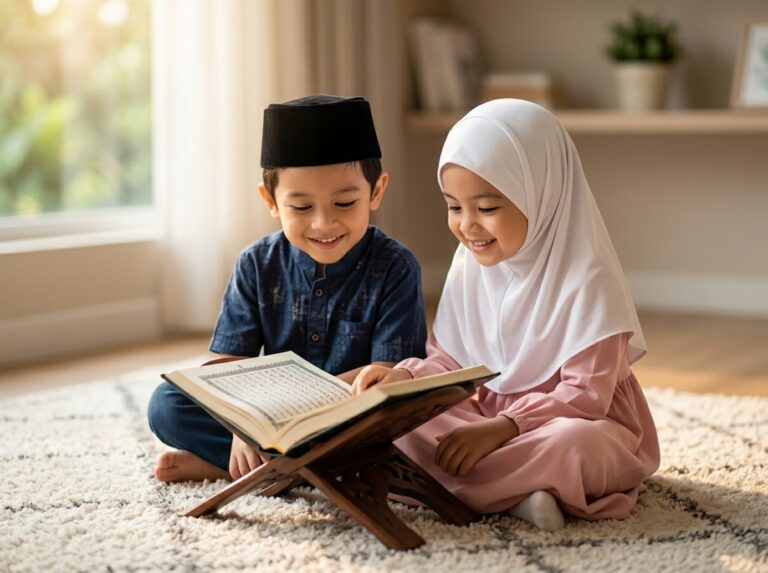
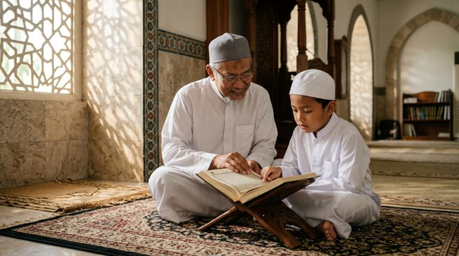
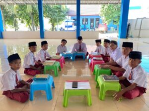
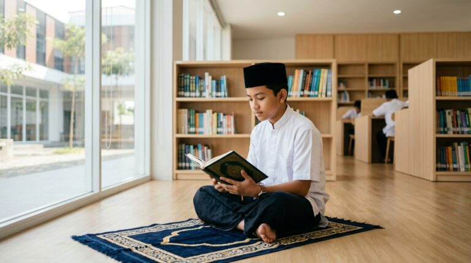
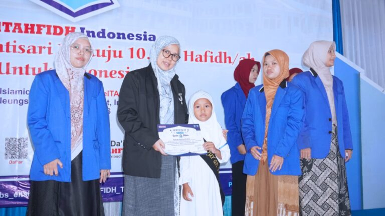
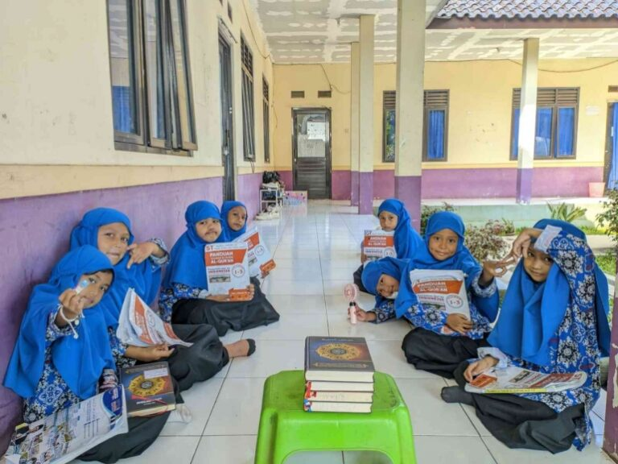
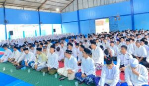
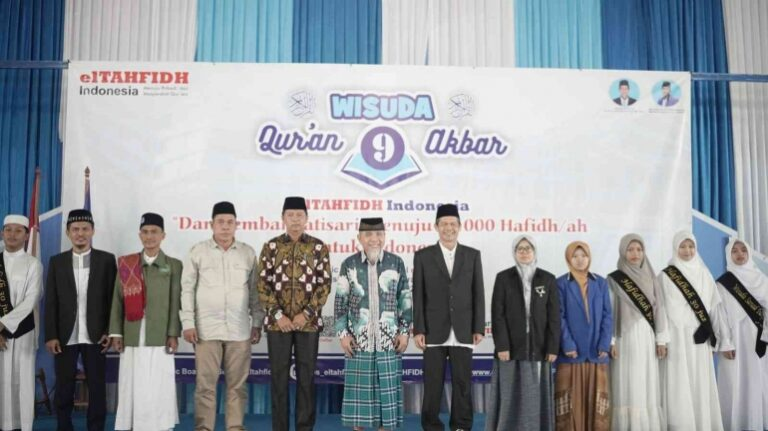
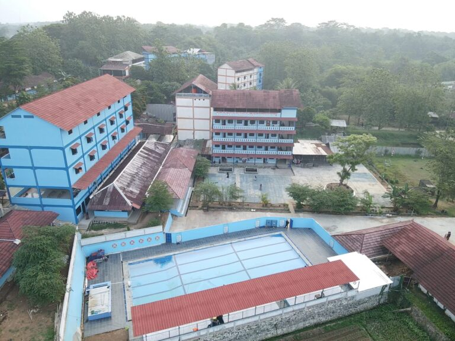

Target Hafalan Quran Anak Sesuai Usia
Mengajarkan Al-Qur’an kepada anak merupakan salah satu investasi terbaik bagi masa depan mereka. Banyak orang tua berharap anaknya tumbuh menjadi

Mengajarkan Al-Qur’an kepada anak merupakan salah satu investasi terbaik bagi masa depan mereka. Banyak orang tua berharap anaknya tumbuh menjadi
Menghafal Al-Qur’an adalah nikmat sekaligus amanah yang sangat besar. Banyak orang mampu menghafal beberapa surat, satu juz, bahkan 30 juz

Menghafal Al-Qur’an merupakan salah satu amalan yang memiliki keutamaan besar dalam Islam. Setiap ayat yang dihafalkan bukan hanya menjadi bekal
Memilih sekolah menengah pertama untuk anak bukanlah keputusan sederhana. Pada usia ini, anak mulai membangun karakter, kemandirian, pola pikir,…

Memilih pendidikan terbaik untuk anak bukanlah keputusan sederhana. Orang tua tentu menginginkan anak tumbuh cerdas, berprestasi, memiliki akhlak…

Menghafal Al-Qur’an merupakan cita-cita mulia yang diimpikan oleh banyak keluarga Muslim. Di tengah perkembangan zaman dan pesatnya kemajuan…

Memilih pendidikan terbaik untuk anak bukanlah perkara sederhana. Orang tua tentu menginginkan lingkungan pendidikan yang mampu membentuk anak…
Di era digital seperti sekarang, orang tua menghadapi tantangan yang semakin kompleks dalam mendidik anak. Kemudahan akses internet, pengaruh…

Mengajarkan anak menghafal Al-Qur’an merupakan salah satu ikhtiar terbaik yang dapat dilakukan oleh orang tua. Selain menjadi bekal ibadah, hafalan

Di era modern yang serba cepat dan penuh distraksi digital ini, para orang tua sering dihadapkan pada dilema besar: bagaimana

Di tengah perkembangan zaman yang semakin pesat, kebutuhan akan lembaga pendidikan Islam yang mampu menyeimbangkan ilmu agama dan ilmu pengetahuan

Memilih sekolah merupakan salah satu keputusan terbesar yang akan diambil oleh setiap orang tua. Sekolah bukan hanya menjadi tempat anak